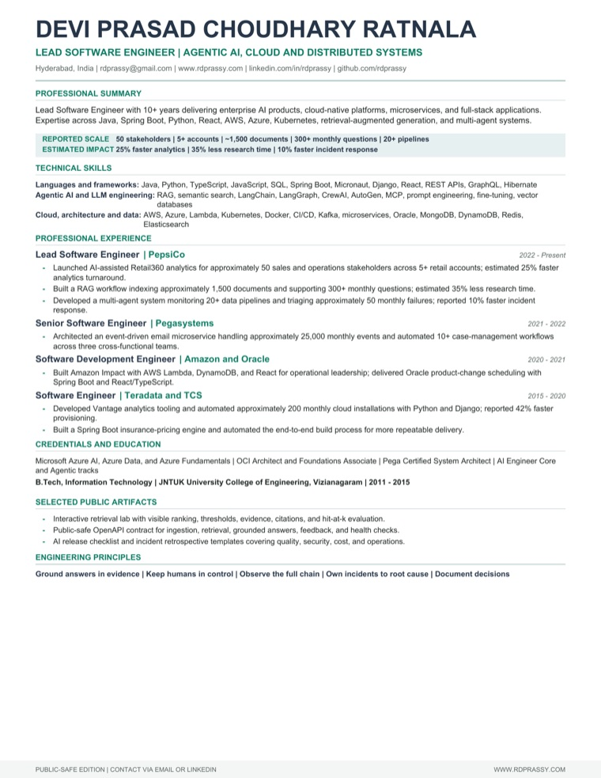

AI-focusedAI & Cloud Leadership
Best for AI engineering, platform, and lead rolesA metrics-led résumé highlighting Retail360, document RAG, multi-agent reliability, cloud platforms, and distributed systems.
Choose the version that best fits the conversation: AI and cloud leadership, a visual one-page overview, or the expanded portfolio edition.
Product-minded engineer with 10+ years across Java, Spring Boot, React, enterprise systems, cloud workflows, production ownership, and an expanding AI engineering toolkit.
Building and supporting business-facing applications in a global product environment across Java, Spring Boot, React, cloud, DevOps, and AI-enabled engineering.
Contributed to an enterprise platform microservice, applying service contracts, shared conventions, Pega architecture knowledge, and Oracle Cloud foundations.
Developed Spring Boot and React/TypeScript scheduling flows, adding durable models that preserved product-change history for auditability.
Built Eclipse RCP capabilities for analytical functions and a Django microservice that automated function installation during cloud-cluster provisioning.
Implemented a Spring Boot premium-calculation engine and automated the application build process for more repeatable delivery.
Designed a MATLAB biometric pipeline using Particle Swarm Optimization, Gabor filters, and Euclidean-distance matching.